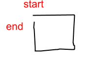
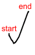
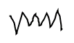

The UML editor is developed using the Diva sketch package. The editor is a digital whiteboard application with an embedded sketch interpreter that understands a subset of the notations of UML class diagrams. It provides basic electronic whiteboard features. In addition it supports gesture command editing and recognition of classes and relations in UML static structure diagrams.
The current prototype supports single-stroke recognition. The table below shows a set of gestures that are recognized by the application. When a user draws a rectangle, it is recognized as a class in UML. The rectangle is then rectified. The user can add and edit attributes and methods inside the class rectangle, and as the user runs out of writing space, the rectangle will automatically expand to provide more room. When the user draws an edge from one class to another, the edge will be recognized as a relation between the two classes. An arrowhead can be sketched either before or after the edge has been drawn. The types of relations that are supported in the current program are association, aggregation and generalization.
Two command gestures are supported currently. A horizontal scribble over an object deletes it, and a check selects it. When the user selects a class node, a set of handles will appear on the class which can be used to manipulate it. The class can be resized with the surrounding handles and moved with the handle in the center. When the user drags a class around, the edges attached to it will reroute themselves to maintain the graph structure.
|  |
|
|
|
 |
 |
|
class |
association |
aggregation |
generalization |
selection |
deletion |